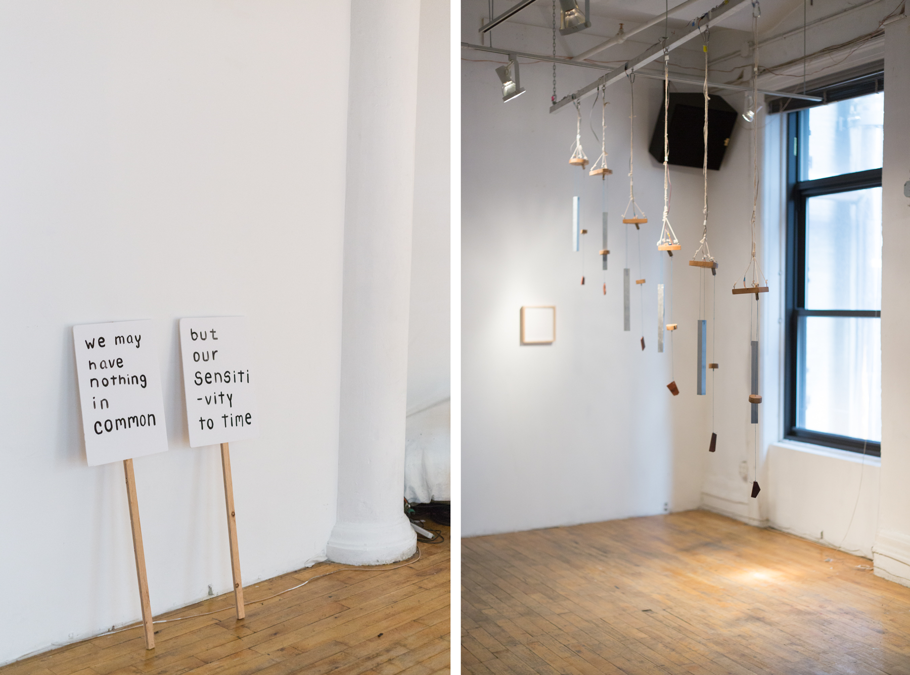
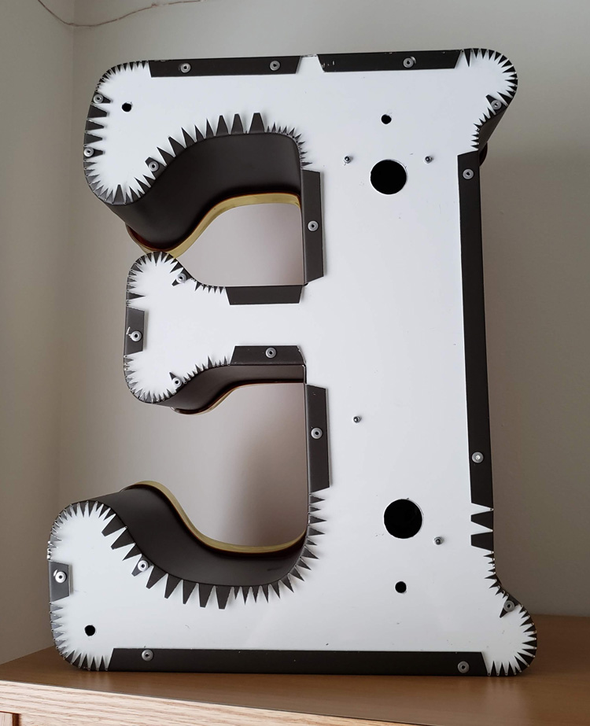
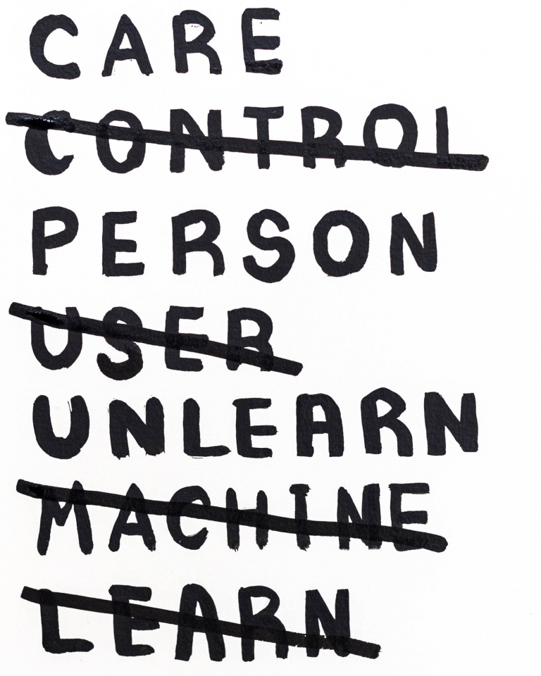
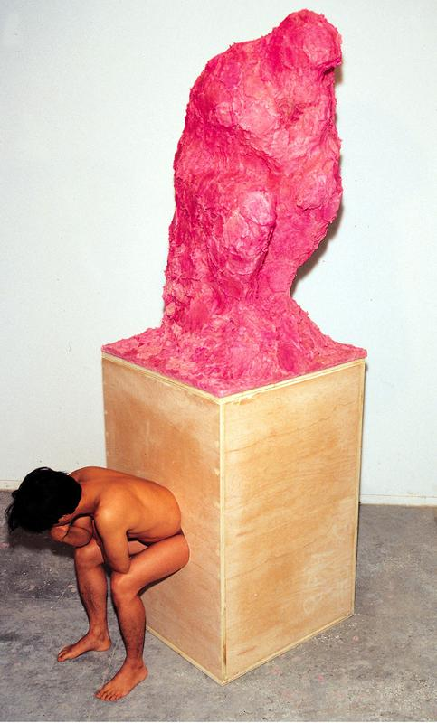
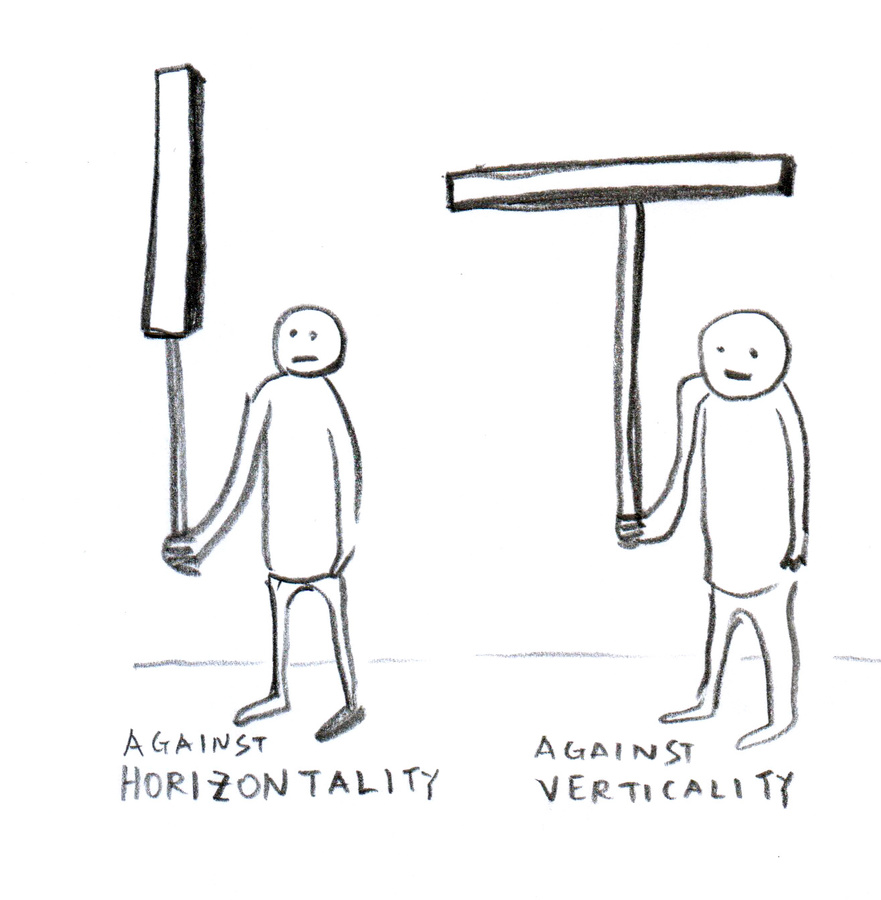

week 5September 21–27

— Seven Futures by Taeyoon Choi and Christine Sun Kim

— the back of sign E is more interesting than its display side
Earlier in the year I inadvertently wrote a whole essay about why I like to make things from scratch and why I was experiencing quite a bit of friction with the dominant Adobe Suite in how it may perpetuate conventions and defaults if used as one’s main creative tool. Wanting to make my own type and build my own tools and digital, creative environments kind of made me just feel like I was being a huge control freak. But really those feelings reflect something larger: the lack of agency and control.
On Wednesday I found out about one of the School for Poetic Computation (SFPC) founders, Taeyoon Choi via TCI. And he said exactly what I’ve been thinking:
“I find commercial software kills my creativity. It’s designed to do something very professional, like a production tool. In the beginning, I felt like I couldn’t really go underneath and truly understand its interface … I’m sculpting with signals. I understand what’s happening, and I can control the behavior of my robots or sound installation. It’s very immediate. Unlike commercial software, like Photoshop, nobody has decided things for me. It’s an open plane to be creative. I can understand every single step.”
I’ve been wrestling with systems (following existing ones, going against existing ones, creating new ones), and what appeals to me most is creating my own systems and rules because I can understand how the whole thing works. Everything can be shaped for my individual intent rather than for a larger system or agenda, because as designers, form-givers, we must use tools to create. So how much truer can our idea be if we design our own tools? Look at what we’re making in the browser compared to what we make in Illustrator or InDesign. I am taking all these rules of microinteractions and Laws of UX that we’re reading about with a grain of salt. It’s hard to unlearn.
But the issue I have with creating my own systems is that I can tend to rationalize on idealistic, idiosyncratic terms instead of realistic, more general terms. That can make it hard for people to understand what’s going on, and it’s not considered “practical.” But what’s nice is that in today’s society of systems, creating a new one is a way of exposing a new perspective. Idealism is possibility not yet realized. It’s different than utopianism.
“Poems are not meant to be functional. Poems are more exploratory, and poems are expressive and very human. We looked at code that way.”
— Taeyoon Choi
Taeyoon also specifies my (and the general) idea of code as language by considering it as figurative language. The way I see it and have been approaching design is a visualization of language. It’s all metaphor. That’s why coding is nice. It feels like writing. It’s a different, more direct translation of written word to form.
How can the process of design also be the metaphor?

— Taeyoon Choi
“How can we resist the capitalist means of control and instead care for each other through the network?”
— “Ethics and Archiving the Web”, Taeyoon Choi
Another significant idea of Taeyoon’s is “care as an alternative to control”. Taeyoon has been focusing on how disability on the internet is handled, but the idea extends to the whole system the designed internet.
“The free-floating traffic of information travels in what appears to be open space, but in reality it is highly regulated because of the infrastructure on which it is built … the society of control does not provide space for the us to take agency and take care.”
— “Ethics and Archiving the Web”
Right now in the capstone course we are oriented toward calculated, controlled experiences, some involving designed “randomness”. It’s all really nuanced, which is actually kind of scary. Manipulation is everywhere. There’s a lot of responsibility in designing these things. Is the illusion of agency dishonest and unethical?
“What are the discrete points of the worldview that are compartmentalized into zeroes and ones, and what are the spaces between?”
— Atom ≠ pixel: What gets lost in the translation and compression of ideas into the pixelized space?

— The Thinker by Cody Choi. Toilet paper, pepto-bismol, wood. A materialization of his “cultural indigestion”.

— A sketch from Taeyoon from a post about protest
“the internet is a tool, a tactic, and a territory”
— Media Manipulation Initiative (MMI)
The internet enables alternate realities that make their way into the whole reality.